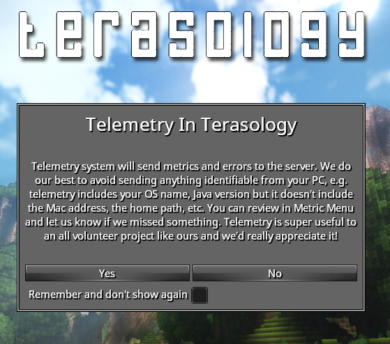

In this blog, I'll update the progress of the 2017 GSoC project Telemetry for MovingBlocks. If you are interested MovingBlocks/Terasology, you can learn more in forum or GitHub
You can get more information about this project by reading:
Project Overview
Bonding Period
I started Bonding Period with dockerizing the telemetry system. At first I found a snowplow-mini docker in dockerHub, I linked the snowplow-mini docker with logstash docker : telemetry-coupled. After talking with my mentor @qwc, we thought that that docker is service oriented and could only be used for test. So then I started a more un-couped telemetry system: telemetry. Since I'm not familar with docker and snowplow stacks, the setup takes more time than I expected.
Phrase 1
Week 1
GSoC started! There are some issues left in the telemetry system, so I started the first week by fixing some issues. Later in the week, I worked on documentation of the telemetry stack: wiki. Then I started the work in Terasology codebase, I created a first telemetry event which tracked some basic info like os, video card, java version, etc. I tested it locally with telemetry system and mentors @skaldarnar @rzats helped me test, too. I implemented also a user authorisation popup when launching, PR: #2968. Reviewing is on process.
